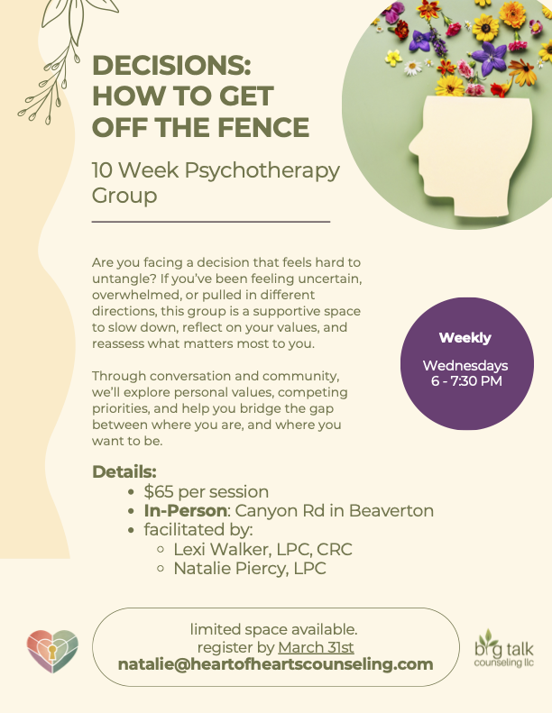

Decisions: How to Get Off the Fence

Event Description
Name: Decisions: How to Get Off the Fence
Details: 10 Week Psychotherapy Group, In-Person in Beaverton (Canyon Rd)
Schedule: Weekly on Wednesdays
Time: 6:00 - 7:30 PM
Location: Beaverton, OR
Cost: $65 per session
Facilitated by: Lexi Walker, LPC & Natalie Piercy, LPC
Description: Are you facing a decision that feels hard to untangle? If you've been feeling uncertain, overwhelmed, or pulled in different directions, this group is a supportive space to slow down, reflect on your values, and reassess what matters most to you. Through conversation and community, we'll explore personal values, competing priorities, and help you bridge the gap between where you are, and where you want to be.
Limited space available. Register by March 31st.
Please email natalie@heartofheartscounseling.com to register
Contact